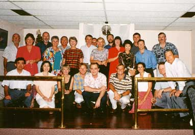

 私も家内と出席する、我々はホスト、ホステスになるのでレストラン玄関でお客様を迎え挨拶し、皆様を席に案内す る。私がアレンジするパーティーでは折り紙を使って鶴をおり席札にした。翼に名前が出るようにパソコンでお客様の 名前を印刷しておいた。結構この趣向は好評をはくし、持ち帰りご自宅で飾ってくださった方もいらっしゃった。 全員着席し、社長の挨拶と乾杯をして食事、歓談が始まる。日本と違って、お酒は自分で自分のグラスに注ぐのが一 般的である。そしてお酒は各自が好きなように各自のペースで飲むというより、たしなむの表現が合うように大人の雰 囲気でパーティーは進められる。我々ホスト、ホステスは慣れていないこともありほとんど立ち歩かない、また皆さん も座ったまま周りの方々と談笑する。家内もそれなりに英語を聞き取れて（時には私以上に聞き取れているみたい）、同じ目線上で何とか受け答えをして いる。ここでいう、同じ目線とは会話レベルの話ではなく、物理的な高さを意味する、要するに顔がほぼ同じ高さにあ ることである。さてパーティーが終わり席を立つと、周りのお客様方は皆家内より２０ｃｍ以上は高くなる。今度は見 上げることになってしまう。座っていれば同じ高さなのに！ 同じ話を知人から聞いた。ニューヨークの地下鉄に乗り、着席すると時々人懐っこいアメリカ人と話が始まる。やはり目線 は同じ高さ位である、同じ駅で降りる時に一緒に立つと突然あいては大男に変身することがあったようである。きっと、 アメリカ人はこの日本人は小男に変身しやがった・・と思ったかも。 ２００１年１０月２９日 記
|